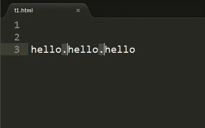

Sublime Text充满着各种编辑功能。这里只粗浅的讲述下哪些是可以做的。
列选择可用于选择一个文件里的矩形区域。列选择并不是通过一个单独模式完成的，而是使用多重选择。
你可以添加选区域来选择多个文本块，或者减少选区来移除选择块。
Windows
Linux
OS X
Windows: Ctrl + Alt + Up and Ctrl + Alt + Down
Linux: Alt + ⇧ + Up and Alt + ⇧ + Down
OS X: ⌃ + ⇧ + Up and ⌃ + ⇧ + Down
多重选择可以让你有效率的进行大范围的文本修改。
对多重选择的任何赞美都过于轻淡了，这是因为：
你可以选择某个文本然后 Ctrl + D 添加更多 实体(可参考 官方文档部分)。 如果想 跳过当前实体, 可以 Ctrl + K, Ctrl + D。
如果选择过多, Ctrl + U 来 取消选择 当前实体。
Ctrl + L 扩展选择到行。 Ctrl + Shift + L 把选区分割成行。
你可以把多重选择的行复制到一个单独的缓冲区，编辑它们，然后再复制编辑后的内容，然后把它们在原来的地方粘贴回去。像下面这样：
方式有很多种，可以在 **Selection**菜单下找到。举几个例子:
Edit, Selection, Find 和 Goto 这些菜单下面包含了大量的编辑指令。可能最终你只会用到其中的少部分，不过当你需要的时候仍有大量的方式可供选择。